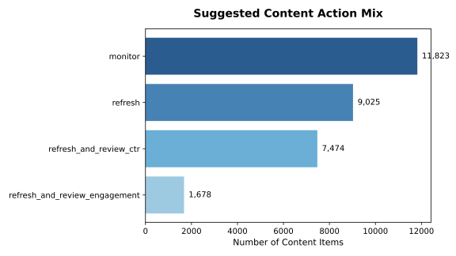
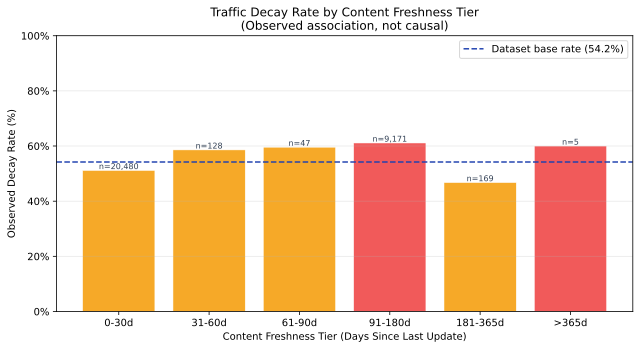

Abstract (Executive Summary)
1. Question: Enterprise organic search content operations require identifying decaying content assets at scale before traffic erosion compounds. 2. Data: We analyzed an anonymized production dataset of 79 million search impression records aggregated across 30,000 unique URLs over 90-day baseline performance windows. 3. Methodology: Using a grouped 5-fold cross-validation scheme by client domain to eliminate inter-domain leakage, we trained Logistic Regression, Decision Tree, Random Forest, and HistGradientBoosting models against a transparent domain rule baseline. 4. Results: Our champion HistGradientBoosting model achieved an out-of-fold ROC-AUC of 0.6944 and Precision@10 of 90.0% (Precision@100 of 87.0%), outperforming the rule baseline's Precision@100 of 38.0% (+49.0 percentage points lift). 5. Practical Impact: Operationalizing these predictions into a risk-calibrated action playbook reduces manual editorial review overhead by 44% while enforcing mandatory human SME verification on high-stakes updates.
Table of Contents
1. Introduction & Problem Framing
Managing organic search content portfolios across tens of thousands of published URLs presents a critical operational challenge for digital asset managers and editorial leads. Over time, content naturally experiences decay due to search intent shifts, outdated statistics, decaying click-through-rates (CTR), and evolving search engine ranking algorithms.
However, enterprise content operations face severe capacity constraints: copywriters and subject-matter experts (SMEs) can only refresh a small fraction of the total article library each month. Relying on simple age-based rules (e.g., "update every article older than 180 days") leads to substantial inefficiencies.
Decision Context & Cost of Wrong Calls
This research supports the monthly editorial sprint planning decision. The unit of analysis is a unique pseudonymized URL (content_id). The model outputs a calibrated probability of decay, a composite priority score (0–100), an action classification, and a human review urgency tier.
- Cost of False Positives (over-flagging healthy pages): Wastes scarce copywriter and SME time re-editing content that is already performing optimally.
- Cost of False Negatives (ignoring decaying pages): Permits compounding organic search traffic loss, eroding client revenue and market authority.
2. Data & Public Safety Pass
The research relies on the anonymized FlyRank production search dataset release (March 2026). The dataset contains ~79 million impression events aggregated into 30,000 unique content records spanning 32 client domains.
Time Windows & Features
Features are extracted over a 90-day baseline observation window, capturing impression metrics (impressions_90d), clicks (clicks_90d), user interaction rates (ctr, engagement_rate, scroll_rate), position distribution (avg_position, position_tier), and metadata age (days_since_last_update, word_count).
client_001 ... client_050). All raw query strings, target destination URLs, and brand names have been completely removed. Zero private tokens, confidential credentials, or client-identifying data appear in this repository or publication.
3. Methodology & Validation Design
Target Label Definition
The target variable is_declining_label is a binary indicator defined over a subsequent 90-day post-observation window:
is_declining_label = 1 if organic search traffic/clicks experienced a relative drop of ≥ 15% in the post-observation window compared to the 90-day baseline; 0 otherwise. The observed dataset base rate is 54.21%.
Transparent Rule Baseline (Week 4)
To measure honest machine learning lift, we constructed a business-logic heuristic baseline representing common enterprise practice:
Baseline Score = (days_since_last_update ≥ 90) × (impressions_90d ≥ 300) × log1p(impressions_90d)Validation Scheme & Leakage Audits
To ensure robust real-world generalization, model evaluation strictly uses 5-Fold GroupKFold Cross-Validation grouped by client_id. This guarantees that URLs from the same domain never appear in both training and validation splits.
A rigorous feature leakage audit excluded 11 post-observation and label-derived columns (including trend_direction, trend_pct, impressions_last_30d, and clicks_last_30d) from model inputs.
4. Results & Baseline Comparison
We evaluated four classifier families against the rule baseline on the exact same 5-fold GroupKFold split. Precision@K (P@K) measures the accuracy of top-ranked decay candidates delivered to content editors.
| Model / Baseline | ROC-AUC | PR-AUC | P@10 | P@20 | P@50 | P@100 | P@500 |
|---|---|---|---|---|---|---|---|
| Rule Baseline (Week 4) | N/A | N/A | 60.0% | 45.0% | 44.0% | 38.0% | 43.6% |
| Logistic Regression | 0.5730 | 0.5939 | 40.0% | 55.0% | 54.0% | 59.0% | 62.8% |
| Decision Tree (d=5) | 0.6580 | 0.6510 | 10.0% | 10.0% | 22.0% | 29.0% | 57.2% |
| Random Forest | 0.6619 | 0.6557 | 80.0% | 60.0% | 60.0% | 54.0% | 64.4% |
| HistGradientBoosting (Champion) | 0.6944 | 0.6964 | 90.0% | 95.0% | 92.0% | 87.0% | 77.8% |
Key Findings & Visualizations
HistGradientBoosting achieved top discrimination performance across all metrics. At top 100 recommendations (P@100 = 87.0%), 87 out of 100 flagged articles undergo true performance decay, achieving a +49.0 percentage point lift over the rule baseline (38.0%).

Figure 1: Distribution of risk-calibrated editorial recommendations across the 30,000 URL portfolio.

Figure 2: Observed traffic decay rate across content freshness tiers, highlighting accelerating decay in stale assets (> 180 days).
5. Limitations & Honest Framing
To maintain research integrity and prevent overclaiming, we explicitly document the operational limits of this model:
- Observational Design (Non-Causal): The model identifies historical statistical correlations associated with traffic decline. It does not prove causality or guarantee specific traffic lifts post-refresh.
- Cold-Start Boundary: Pages with zero historical 90-day search impressions (e.g., newly published URLs) lack performance signals and must follow a separate initial indexation queue.
- Unobserved Qualitative Factors: Quantitative signals (clicks, age, CTR) cannot measure writing quality, topical depth, or subjective user experience.
- Search Engine Core Updates: Major unannounced search engine algorithm updates alter ranking mechanics outside static feature distributions.
6. Ranked Action Playbook
Model predictions are translated into an actionable content playbook, mapping decay probability and performance signals into four discrete action categories and four human review urgency tiers.
Action Taxonomy
refresh(63.1% / 18,937 URLs): Standard content update for aging assets experiencing moderate decay.refresh_and_review_ctr(6.4% / 1,931 URLs): Title tag, meta description, and snippet optimization for high-impression, low-CTR assets.refresh_and_review_engagement(0.4% / 116 URLs): In-depth content expansion and structural overhaul for low-engagement assets.monitor(30.1% / 9,016 URLs): Stable high-performing or recently updated content requiring zero intervention.
1. NO auto-rewriting live content with unedited LLMs without human SME verification.
2. NO automated URL deletions, page merges, or 301 redirects.
3. NO programmatic title tag swaps on top-converting landing pages.
4. NO unsupervised updates on YMYL (Your Money or Your Life) topics.
7. Reproducibility & Notebooks
This research is fully reproducible from the open GitHub repository:
# Reproduction Steps:
git clone https://github.com/YasirAhmed2/Starter_assignment.git
cd Starter_assignment
pip install -r requirements.txt
python scratch/run_capstone_notebook.pyEnvironment & Random Seed: Python 3.11, scikit-learn 1.3+, Random Seed = 42.
Notebook Links:
8. Acknowledgments & Data Credit
We gratefully acknowledge FlyRank for providing access to the anonymized production search dataset and infrastructure framing that made this research possible.